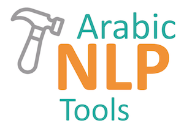
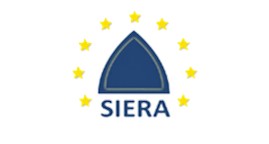
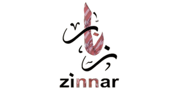

The Arabic Ontology
A long-term research project to develop an Arabic Wordnet with ontologically-clean content.
Currasat - Corpora for six Arabic dialects
Corpora for Libyan, Palestinian, Lebanese, Iraqi, Sudanese, and Yemeni dialects that have 1.3 million words were gathered from several resources and each word was manually annotated with 16 features.

Arabic NLP tools and resources
All tools and algorithms we develop for NLP tasks are made open source.
GovSeer - Interoperability of e-Governmental Services
Ontology-Based Interoperability of e-Government Services.
The project aims to support mobility and exchange of researchers between universities to facilitate joint research activities in the area of e-governance and interoperability.
VerbMesh - Large Graph of Arabic Verbs
Funded by Birzeit University, 2014-2016.
To collect and integrate Arabic verbs across many lexicons, and to build a large-scale graph of
Arabic verbs and their inflectional and derivational relations.
MashQL: Mashup Query Language for Graph Databases
Started as part of the EU Marie Curie SearchIn
Project at the University of Cyprus.
To develop a novel approach for querying the Data Web (Web 3.0) - a mashup query language toping
SPARQL for querying RDF stores.

SIERA - Multilingual Knowledge Technologies
Coordinator. Funded by EU FP7, No. 295006, 5 Partners, 2011-2014.
To develop multilingual and multi-cultural knowledge-sharing technologies.

Zinnar - The Palestinian e-Government Interoperability Framework
In cooperation with the Palestinian Ministry of Telecommunication and IT, and other
Palestinian
ministries.
To develop and deploy a framework and ontology to enable e-governmental and e-services in
Palestine, (adopted by all ministries).
PalGov - The Palestinian e-Government Academy
Coordinator. Funded by EU-TEMPUS, No. 511159, 11 partners, 2010-2012.
Capacity building for Palestinian ministries to gain the know-how for implementing e-government
services in three main areas (interoperability, security, and IT laws).